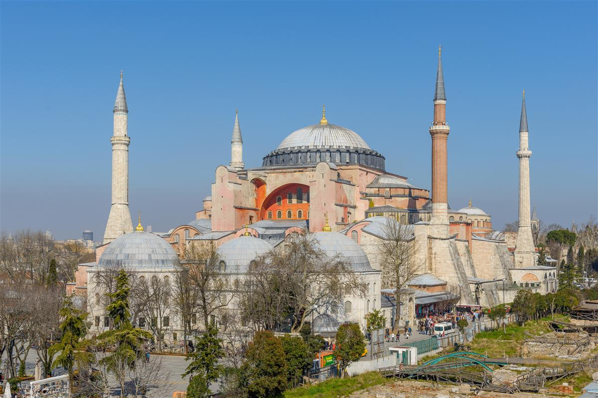
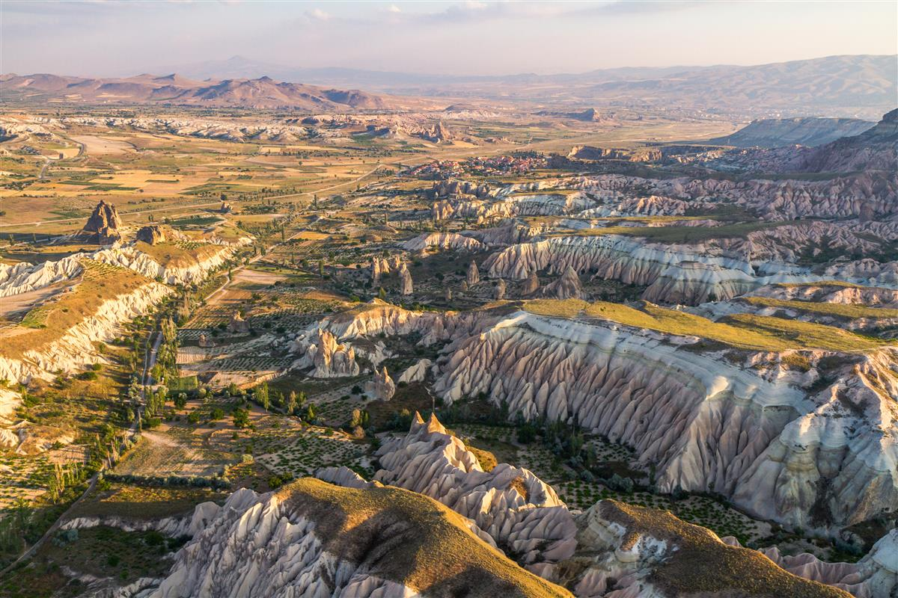
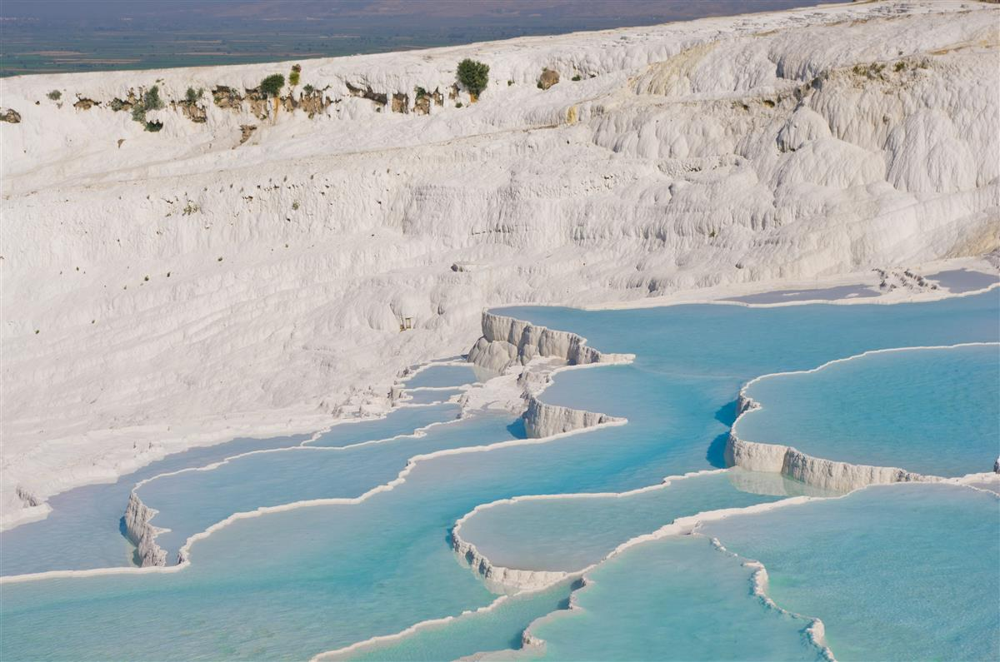
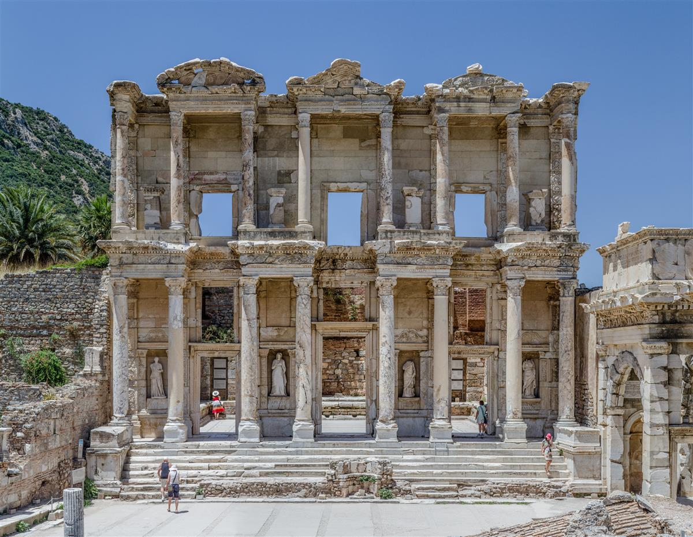
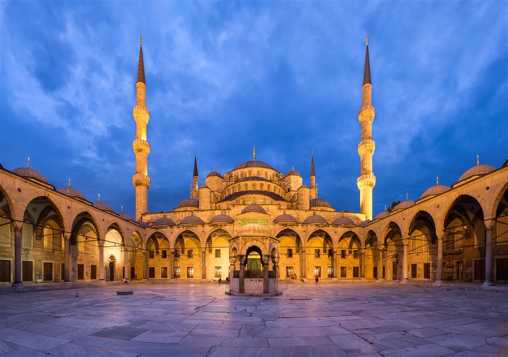
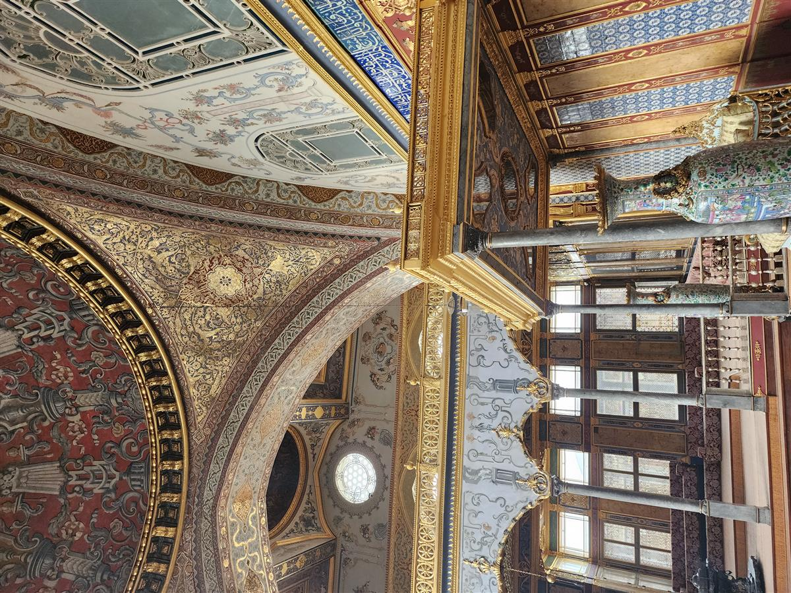
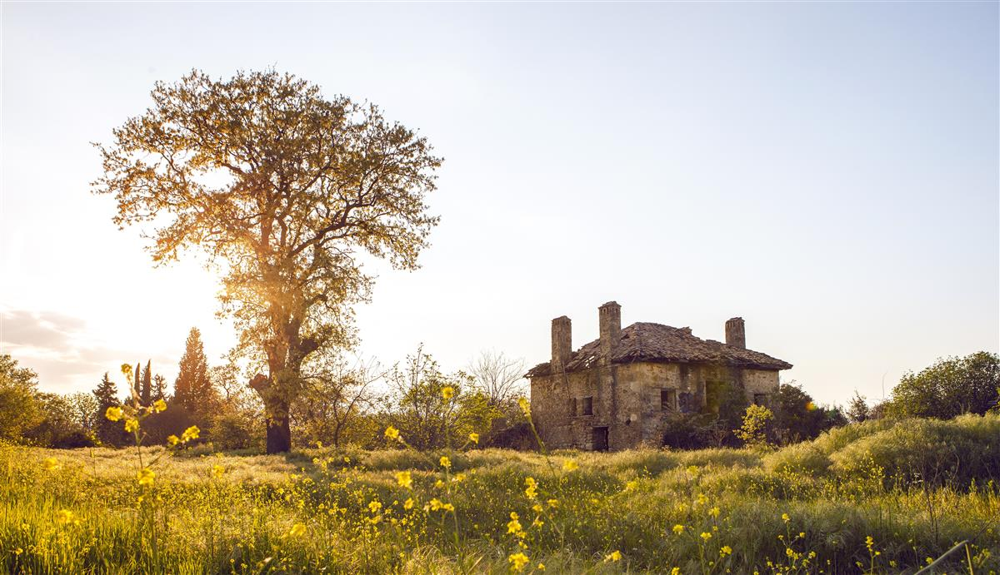
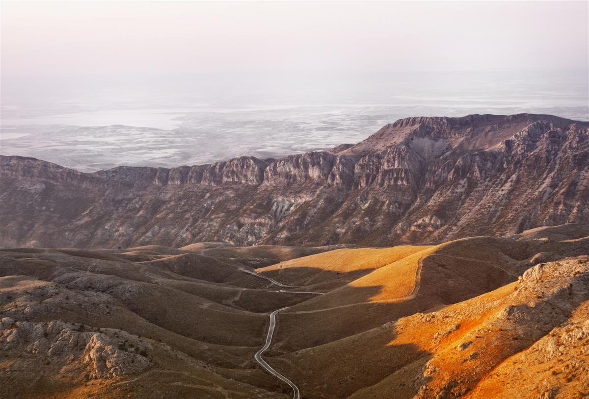

Turkey is a bridge between continents, a land where the whispers of ancient empires harmonize with the pulse of modern life. From the minaret-pierced skyline of Istanbul to the surreal "fairy chimneys" of Cappadocia, this nation offers a sensory journey unlike any other. Whether you are exploring sun-drenched Mediterranean coasts or walking through the marble streets of Greco-Roman cities, Turkey promises a deep and authentic connection to history. This guide highlights 8 essential stops that capture the soul and majestic beauty of this transcontinental gem, providing an immersive look at the crossroads of the East and West.

The Hagia Sophia stands as an eternal symbol of Istanbul's layered history. Originally commissioned as a cathedral in the 6th century by Emperor Justinian, its massive dome was an architectural miracle of the Byzantine era.

Cappadocia is a geological dreamscape located in the heart of Anatolia, formed by volcanic eruptions and millions of years of erosion. The landscape is dotted with "fairy chimneys"—towering, spindly rock formations that early inhabitants carved into homes, churches, and entire underground cities.

Pamukkale, which literally translates to "Cotton Castle" in Turkish, is a natural wonder of gleaming white travertine terraces that appear like a frozen waterfall on the side of a mountain.

Ephesus was once the second largest city in the Roman Empire and a major commercial and religious hub in the Mediterranean. Today, it stands as one of the best-preserved and most evocative ancient sites on earth.

Known officially as the Sultan Ahmed Mosque, the Blue Mosque is the most famous landmark of Istanbul’s skyline. Built in the early 17th century by Sultan Ahmed I, it was designed to surpass the nearby Hagia Sophia in both scale and decorative splendor.

For nearly four centuries, Topkapi Palace was the absolute center of the Ottoman Empire—a sprawling complex that served as the primary residence of the Sultans and the seat of their government.

Antalya is the shimmering capital of Turkey's Mediterranean coast, a city where the jagged peaks of the Taurus Mountains meet the crystal-clear waters of the Turquoise Riviera.

Mount Nemrut is one of the most mysterious and awe-inspiring sites in all of Turkey. Located in the remote southeast on a 2,134-meter peak, it is home to the colossal tomb-sanctuary of King Antiochus I of Commagene.
The Endless Magic of Turkey: Turkey is a destination that captures the heart and never lets go. From the golden mosaics of Istanbul to the silent, stone faces of Mount Nemrut, it is a country that offers a richness of experience found nowhere else on earth. Safe travels and Hoşça kal!
Every destination and accommodation is hand-selected to meet the highest standards of luxury.
Book directly with verified premium providers to ensure the best rates and exclusive perks.
Our worldwide presence ensures you have premium support wherever your journey takes you.
"Luxe Voyages didn't just book a trip; they crafted an unforgettable experience. Every detail was handled with unparalleled professionalism."